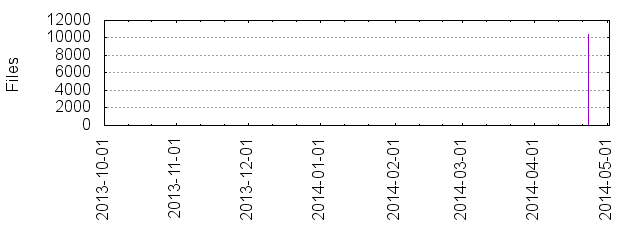

Files
- Total files
- 10357
- Total lines
- 2353273
- Average file size
- 21448.97 bytes

| Extension | Files (%) | Lines (%) | Lines/file |
|---|
| 94 (0.91%) | 7969 (0.34%) | 84 |
| 1 | 1 (0.01%) | 78 (0.00%) | 78 |
| SUNWCCh | 42 (0.41%) | 255 (0.01%) | 6 |
| a | 7 (0.07%) | 231610 (9.84%) | 33087 |
| c | 104 (1.00%) | 190235 (8.08%) | 1829 |
| cc | 25 (0.24%) | 11218 (0.48%) | 448 |
| config | 1 (0.01%) | 5 (0.00%) | 5 |
| cpp | 155 (1.50%) | 37787 (1.61%) | 243 |
| cs | 7 (0.07%) | 251 (0.01%) | 35 |
| csproj | 2 (0.02%) | 400 (0.02%) | 200 |
| css | 6 (0.06%) | 1502 (0.06%) | 250 |
| d | 1 (0.01%) | 27 (0.00%) | 27 |
| epub | 9 (0.09%) | 135358 (5.75%) | 15039 |
| exp | 2 (0.02%) | 373 (0.02%) | 186 |
| filters | 7 (0.07%) | 4180 (0.18%) | 597 |
| go | 1 (0.01%) | 297 (0.01%) | 297 |
| h | 565 (5.46%) | 227263 (9.66%) | 402 |
| hpp | 8994 (86.84%) | 1796230 (76.33%) | 199 |
| html | 6 (0.06%) | 401 (0.02%) | 66 |
| ico | 1 (0.01%) | 202 (0.01%) | 202 |
| inl | 1 (0.01%) | 350 (0.01%) | 350 |
| ipp | 164 (1.58%) | 43995 (1.87%) | 268 |
| java | 17 (0.16%) | 1988 (0.08%) | 116 |
| js | 76 (0.73%) | 20414 (0.87%) | 268 |
| lib | 10 (0.10%) | 51142 (2.17%) | 5114 |
| m | 1 (0.01%) | 34 (0.00%) | 34 |
| markdown | 2 (0.02%) | 152 (0.01%) | 76 |
| md | 2 (0.02%) | 8 (0.00%) | 4 |
| mk | 4 (0.04%) | 426 (0.02%) | 106 |
| patch | 1 (0.01%) | 559 (0.02%) | 559 |
| pbxproj | 1 (0.01%) | 2506 (0.11%) | 2506 |
| pdf | 1 (0.01%) | 1904 (0.08%) | 1904 |
| png | 3 (0.03%) | 651 (0.03%) | 217 |
| prefs | 1 (0.01%) | 5 (0.00%) | 5 |
| prop | 1 (0.01%) | 9 (0.00%) | 9 |
| properties | 1 (0.01%) | 12 (0.00%) | 12 |
| props | 2 (0.02%) | 26 (0.00%) | 13 |
| py | 2 (0.02%) | 196 (0.01%) | 98 |
| rc | 1 (0.01%) | 250 (0.01%) | 250 |
| rc2 | 1 (0.01%) | 13 (0.00%) | 13 |
| resx | 1 (0.01%) | 116 (0.00%) | 116 |
| s | 3 (0.03%) | 126 (0.01%) | 42 |
| settings | 2 (0.02%) | 11 (0.00%) | 5 |
| sh | 6 (0.06%) | 419 (0.02%) | 69 |
| sln | 4 (0.04%) | 170 (0.01%) | 42 |
| txt | 6 (0.06%) | 402 (0.02%) | 67 |
| vcxproj | 7 (0.07%) | 3058 (0.13%) | 436 |
| xccheckout | 1 (0.01%) | 41 (0.00%) | 41 |
| xcconfig | 2 (0.02%) | 14 (0.00%) | 7 |
| xml | 3 (0.03%) | 36 (0.00%) | 12 |